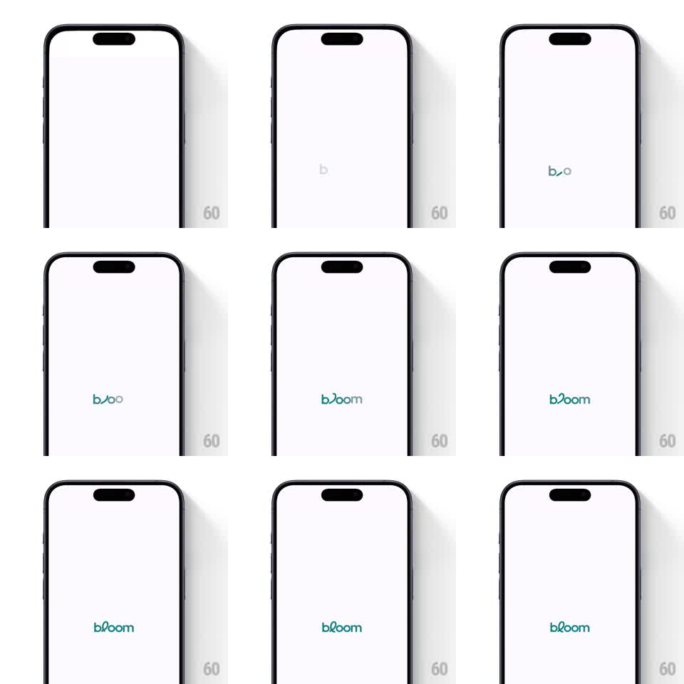

Media
Frame-by-frame

Rebuild this animation 1:1: Bloom's splash - on a white screen the wordmark assembles letter by letter, the "b" fading in first in gray before the full teal "bloom" lockup with its arcing double-o accent materializes and holds.

Rebuild this animation 1:1: Bloom's splash - on a white screen the wordmark assembles letter by letter, the "b" fading in first in gray before the full teal "bloom" lockup with its arcing double-o accent materializes and holds. ## Integration Integration: stack-agnostic spec - springs given as stiffness/damping, timed motions as duration + curve; map every value to your framework and animation library of choice. ## Scene Plain white screen. At center, the lowercase wordmark "bloom" in a soft teal, with a curved arc sweeping over the double-o like a growing stem. Nothing else on screen, no status-bar chrome beyond the system's. ## Motion spec Pattern: letter-by-letter wordmark assembly. - The "b" fades in first at low contrast (light gray, 300ms ease-out). - The arc over the "oo" draws in next (stroke draw, ~250ms) as the remaining letters "loom" materialize left to right (each fading and rising ~4px into place, 150ms each, staggered 80ms). - As letters land, the color deepens from gray to the final teal (~400ms color tween overlapping the last letters). - The completed lockup holds dead center for the remainder of the splash (~1s), then the screen transitions on. ## Calibration - Total assembly is under 1.5 seconds; the hold at the end is what lets the brand register. - Letters rise only a few pixels - this is a materialization, not a bounce. ## Reduced motion The complete wordmark fades in whole over 300ms. ## Don't miss - The arc accent belongs to the "oo" pair specifically - it is the logo's signature and must draw as one continuous stroke. - Teal is the only color; keep the background pure white with no tint.